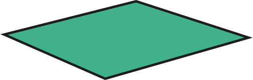
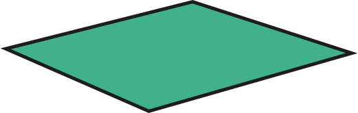
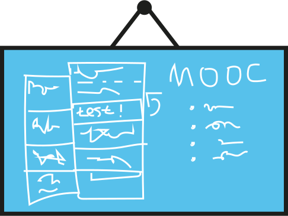
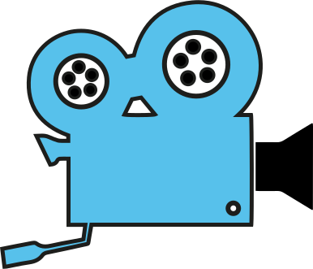
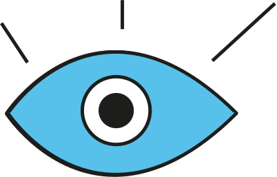

INTRODUCTION In the last months of 2014 and the first of 2015 we created a MOOC called Prototyping Interaction.The MOOC was based on a course we teach to our students at the program Communication of Applied Sciences in Amsterdam. The MOOC was hosted at Iversity in Berlin. We learned a lot making this MOOC and with this website we like to share our experiences.

01 pre production

internal proposal
Subphase: internal proposal
Make sure the organisation you’re working for backs up your project. In our internal proposal we listed clearly what the benefits of making a MOOC would be for our school.
Action: conduct pre-research
Before you start, you should have an idea of what’s already out there. Research if there are MOOCs or other (online) recources on your subject. Roughly estimate a budget. Write a two page proposal.

recruitment
Subphase: recruitment
You can’t do this alone. There are quite a bit of skills and knowledge involved to push things forward.


Action: form a team
Find colleagues ( include your students! ) who share the same enthousiasm and vision and get them on board. Hire the skills (e.g. video crew) that are not available from external sources. We worked in a small team of 4 people and hired some extra professionals for visual design, consultation on the assigment, camera and editing. Take some time to do fun things, like having diner together.
research
Subphase: research
There are a number of things you need to research before designing your MOOC.
Action: brainstorm
Together with your team, conduct a brainstorm and invite external people who might deliver other views.

Action: choose a platform
There are a lot of MOOC platforms available. Choose a platform that suits your needs the most. Be aware that the management board already may have contracts with MOOC providers.

Action: describe your target audience
For whom are you designing this course?

concept
Subphase: concept
A strong concept will design a better MOOC. It is about the idea behind what you do.
Action: educational concept
Determine the educational concept in co-operation with an educational expert.
Action: Describe the learning goals
Describe the learning goals of the course, together with the criteria students will be assessed on.
Action: design
Design a visual style and concept. We used pinterest.com to collect and share ideas.
submission
Subphase: submission
Send in your proposal to internal stakeholders and platform.
 

02 test chapter
Action: preparation
Preparing videos for a MOOC is more like writing a text than preparing a class. The better structured the content is and the better the instructor already knows what to say before shooting a video, the easier it will be to produce it.
Action: making a testchapter
Try to make a testchapter a soon a possible, because this is where you learn the most of your concept. For us it really helped to find out what worked and what didn't work. Making your ideas tangible in a testchapter as early as possible provides you with enough time to make some major changes. Start with one video, to learn how this works: getting a feel for the video medium. Write a script for the video to structure the content and find a tone of voice. If you are satisfied with the first video, start structuring and scripting the rest.
Action: getting feedback
Get feedback on the testchapter Try to get feedback from different perpsectives. Ofcourse consult your target audience but you can also get usefull feedback from fellow educators, filmmakers or visual designers for example.
This is where we should have started with social media.

03 production
course production
Subphase: course production
This is where all the hard work goes: be prepared to spend a lot of time in this phase.

Action: make and iterate
When we were working on our MOOC, writing down the actual texts, assignments and videoscripts, we were changing the structure of the MOOC all the time. So be prepared things may shift and change: it's all for the better! We worked with a whiteboard so we could easily wipe out elements of the structure of our MOOC or change it around.
stop!
have you
tested yet?


video production
Subphase: video production
Also do not underestimate the video production process: hire professionals if you have to.

Action: stand-ups
A stand-up is a piece of text someone says on camera, looking in the lense. Telling something to a camera is different then talking to a crowd. Try it out and get accostumed to the camera. Some people are able to give a lecture on camera with just some notes a their side. Others need a script with a the text written out. Try out what's best for you. We used a teleprompter for the standups.

Action: show, don't tell
Remember a talking head is not the most interesting thing to look at. If infomation comes to a student via ear and eye, he's likely to understand and remember it much better.

Action: editing
Organize your project well. Depending on the visual and conptual style of the MOOC you're making, you will end up with a lot of footage. We collected 800 GB of video footage. So be sure your footage and videoprojects are well oganised and everything is well backed up.

Action: editing
Do a lot of viewings. Editing is telling a story. To make sure the editor is telling the story you want to put across, watch the rough edited parts so do a lot of viewings. We did all the editing ourselves but even then we were checking all the time with two persons if the edit was going in the right direction. If you look at something with at least two people, ideas come up and the story evolves through the conversation.
stop!
have you
tested yet?
04 execution

platform placement
Subphase: platform placement
Every MOOC platform has it's own content management system. Try to learn how it works and what the possibilities are beforehand.

Action: getting to know the back-end
Be sure you start well ahead with placing all the course material on the platform. Take some time to get to know the system, it's possibilities and it's limitations. For example, we found out during the platform placement that the preview chapter could only contain 3 movieclips, while we made 5 clips. Be prepared that some innovative concepts you've developed, might not be supported by the the backend of the MOOC platform you're on.
launch
The day you go live should be a celebration!

maintenance & community management
Subphase: maintenance & community management
Interaction with the students is extremely important for the overall quality of the course.
Action: monotoring feedback
During the time the course is running, it's important to keep monitoring feedback on the forums and deal with questions and complaints. Try to do this on a regular base so students do not feel they are only dealing with a virtual learning environment. After all, students like to get feedback on their work.
final assesment
Subphase: final assesment
In our case, we let the students work on a project, spread out over the weeks the course was published. The project itself consists of four assigments, and are to be collected in a portfolio. We reviewed this portfolio on the basis of the learning goals and criteria. Be very clear in communicating these criteria beforehand. If the portfolio's or final exams are... too much for yourself to handle, get help from the MOOC platform, student assistents and fellow instructors. Some MOOCs provide only peer feedback, so you don't need to review students at all.
05 evaluation


overview